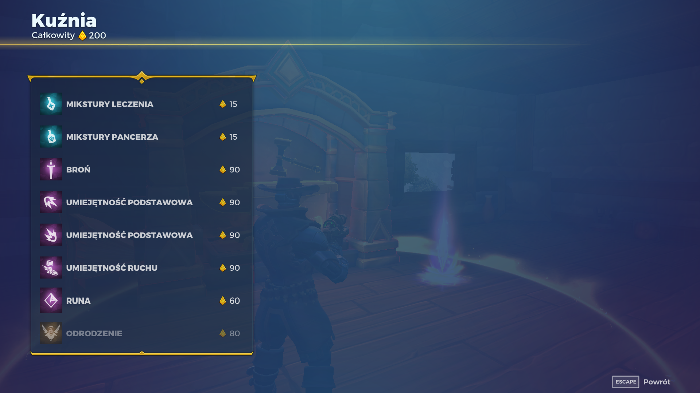
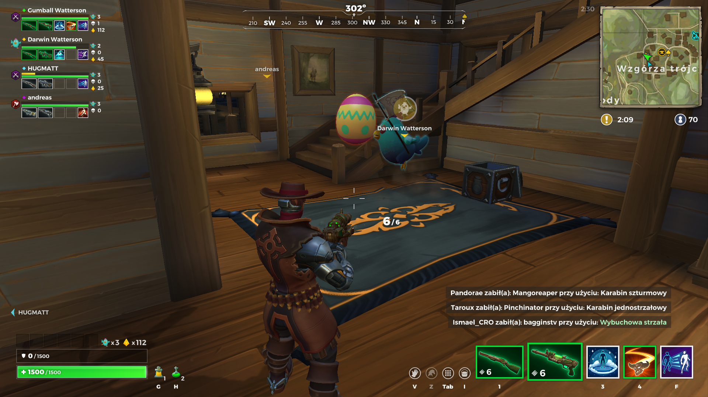

Od czego zacząć?
Najlepiej zacząć od podstaw, czyli od tego czym jest Realm Royale... A więc Realm Royale jest grą battle royale, ale tym co wyróżnia ją od konkurencji jest możliwość kucia przedmiotów w kuźni...
Co później?
Dobra... gdy już mniej więcej wiemy czym jest i czym nie jest Realm Royale przejdźmy do tego co się tam robi... a robi się wiele. Od kucia i lootowania poprzez szczelanie, aż do dziobania... TAK w tej grze możesz zadziobać swoich wrogów... Tak jak na obrazku poniżej, gdzie to kura zadziobóje jajko, ale proszę się nie martwić to jajko też może dziobać, więc walka jest wytównana.
Gdy już udało nam się omówić dziobanie, to jest najważniejszą rzecz w grze, przejdźmy do drugiej najważniejszesz rzeczy, którą jest oplówanie PM'ów (głównie złotych). Zapytacie się napewno, czemu macie je oplówać. Już przychodzę z odpowiedzią. Gra ta jest pełna botów. Boty te wiedzą zawsze gdzie jesteś, a co za tym idzie, za każdym razem cię trafiają, robią nawet 360 no-scope. Twórcy jednak wpadli na genialny pomysł i dodali do gry broń z prawie zerową szansą na trafienie... Tak dodali PM'a i sprawili aby był ulubioną bronią botów... Tak więc, niżej pokazuje jak się oplówa PM'a.
Czego się bać?
Chociaż pytanie może wydawać się ciężkie, jest banalnie proste... Można wręcz odpowiedzieć tylko jednym słowem: "Błędów"... Jak mogliście zobaczyć na filmiku powyżej poza oplówaniem pokazany był również gracz, który się zaciął... nikt nie wie jak... nikt nie wie dlaczego... nikt nie wie jak to naprawić... I choć błąd ten wydaje się ogromny to taki nie jest... wystarczy porównać go z innymi błędami występującymi w tej grze np. pojawianiem się ludzi w poczekalni w tym samym miejscu. Proszę sobie wyobrazić stu graczy stoi w jednym miejscu i żaden z nich nie może się ruszyć. Koszmar co nie?
Nie, bo rzeczywistość w tej grze. Zdarza się to nagminnie. Proszę tylko zobaczyć jak to wygląda w połączeniu z drugim błędem, którym jest nie patrzenie jak się zapisuje zrzuty ekranów w paincie...
Czyżby koniec?
Tak to już jest koniec... nie ma już nic...
Jesteśmy wolni, możemy iść
To już jest koniec, możemy iść,
Jesteśmy wolni, bo nie ma już nic
Robaczek w swej dziurce jak docent za biurkiem,
I pszczółka na kwiatkach jak kontrol w tramwajach,
Tak dłubie i gmera napisze, wymyśli,
Obejdzie wokoło, zabrudzi, wyczyści,
I krzaczek przy drodze i brat przy maszynie,
Jak noga w skarpecie sprzedawca w kantynie,
Kamyczek na polu i strażnik na straży,
Lodówka wciąż ziębi, kuchenka wciąż parzy,
A po co, a po co tak dłubie i dłubie,
A za co, a za co tak myśli i skubie,
I tak się przykłada i mówi z ekranu,
I bredzi latami wieczorem i ranooo...
Ref.
To już jest koniec (to jest już koniec),
Nie ma już nic (nie ma już nic),
Jesteśmy wolni (jesteśmy wolni),
Możemy iść (możemy iść).
To już jest koniec (to jest już koniec),
Możemy iść (możemy iść),
Jesteśmy wolni (jesteśmy wolni),
Bo nie ma już nic (bo nie ma już nic).
Nie ma już nic, nic, nic, nic.
Żegnam i życzę udanego odpoczynku >:L